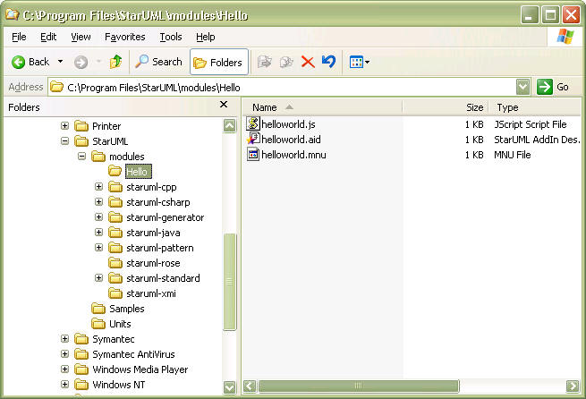
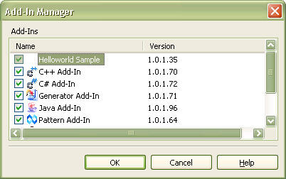
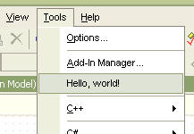

This chapter briefly describes methods and processes of developing Add-In, using the "Hello, world" example.
The "Hello, world" example is the first and easiest example for learning any technique. In this chapter, we will use this example to learn about Add-Ins. The "Hello, world" example does not use all Add-In elements, but only the basic ones. It comprises the following elements.
This "Hello, world" example adds [Hello, world!] to the menu, and adds a function to change the project title to "Helloworld" when the user selects the menu item.
First, use Jscript to create a script that changes the project title to "Helloworld." Use a text editor to enter the script source code as below and save it as helloworld.js.
var app = new ActiveXObject("StarUML.StarUMLApplication");
var prj = app.GetProject();
prj.Title = "Helloworld";
The first line of the script creates an object called StarUMLApplication. This object must be created as it provides the initial point for handling StarUML™. The second line acquires an object for the project, and the third line assigns the title of the project object acquired as "Helloworld."
A menu extension file (.mnu) must be created in order to extend the StarUML™ menu. In this example, we will add [Hello, world!] under the menu item [Tools].
<?xml version="1.0"?>
<ADDINMENU addInID="StarUML.HelloworldAddIn">
<BODY>
<MAINMENU>
<MAINITEM base="TOOLS" caption="Hello, world!" availableWhen="PROJECT_OPENED"
script="helloworld.js"/>
</MAINMENU>
</BODY>
</ADDINMENU>
A menu extension file starts with the <ADDINMENU> tag and consists of <HEADER> and <BODY>. The <HEADER> section may be omitted, and the <BODY> section contains the information for menu extension. In this example, the <MAINITEM> element is added under the <MAINMENU> item for extending the main menu. For the <MAINITEM> element, the 'base' attribute is the location of the menu item to be added, 'caption' is the menu item name, 'availableWhen' is the condition for activating the menu, and 'script' is the script to execute when the menu item is selected.
Note: For details on menu extension, see "Chapter 8. Extending Menu".
The script file (helloworld.js) and menu extension file (helloworld.mnu) must be placed in the same directory. Under the installation directory of StarUML™, there is a directory called "modules." Make a subdirectory called "HelloworldAddIn" under this directory and place the two files in it.

If you deployed the Add-In files properly, you must write Add-In description file so as to recognize the Add-In to StarUML. Add-In Description file is a XML document file which extension file name is '.aid'. It contains overall information about the Add-In that is a name of Add-In, COM object name, file name of executable module, menu extension file name, help url, and so on. For details on Add-In Description file, see "Chapter 9. Writing Add-in COM Object".
The following is Add-In Description file of HelloWord example.
<?xml version="1.0" encoding="UTF-8"?>
<ADDIN>
<NAME>Helloworld AddIn</NAME>
<DISPLAYNAME>Helloworld Sample</DISPLAYNAME>
<COMPANY>Plastic Software, Inc.</COMPANY>
<COPYRIGHT>Copyright 2005 Plastic Software, Inc. All rights reserved.</COPYRIGHT>
<HELPFILE>http://www.staruml.com</HELPFILE>
<ICONFILE>Helloworld.ico</ICONFILE>
<ISACTIVE>True</ISACTIVE>
<MENUFILE>helloworld.mnu</MENUFILE>
<VERSION>1.0.1.35</VERSION>
</ADDIN>
Save the Add-In description file in the directory that Add-In is deployed.
If the steps above have been performed properly, the "Hello, world" Add-In should have been added to StarUML™. Start StarUML™ and select [Tools] ¡æ [Add-In Manager] to check whether the Add-In has been added correctly.

If the installation was successful, it can be verified that [Hello, world!] has been added under the [Tools] menu. When this menu is selected, the file helloworld.js will be executed to change the project title to "Helloworld."
